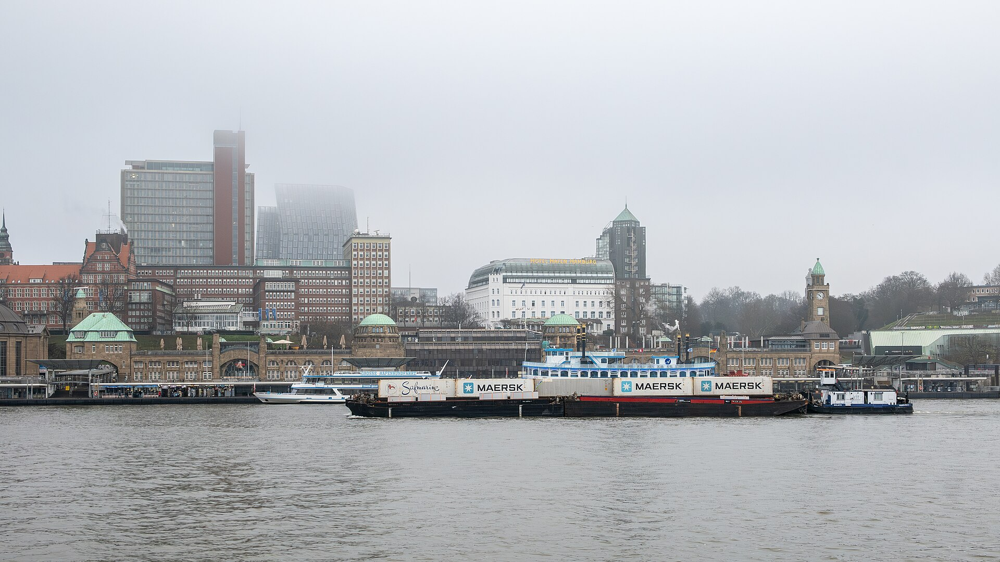
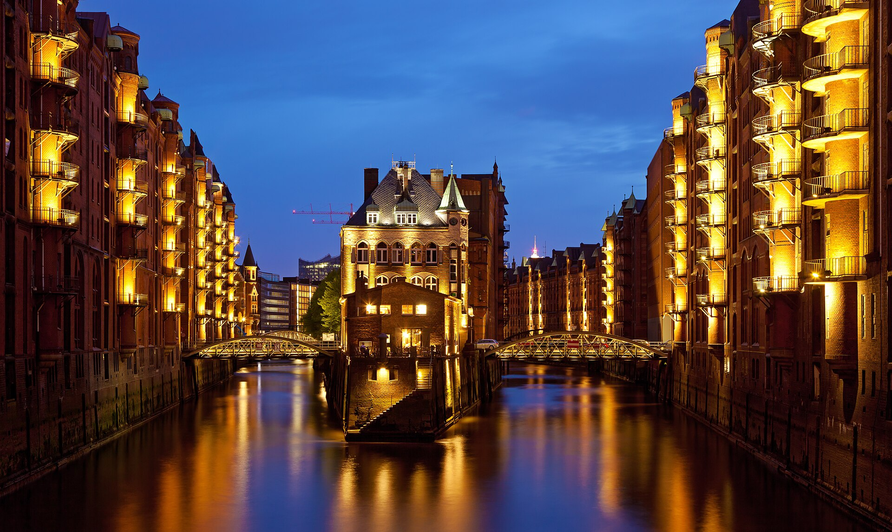

2–3 Tage Hafen, Kiez & König der Löwen — mit Tagesplänen, Karten, Food-Guide, echten Hotelpreisen und Budgets pro Variante.
Variante wählen, dann Tag für Tag durchklicken — jeder Tag mit Ablauf und eigener Karte mit den Stationen als Route.
LH2078, MUC 18:45 → HAM 20:05 / Rück z. B. LH2077 19:35 → 20:50 · ab ca. 212 € (Round-Trip-Snapshot 10.10.)
Rück-Alternativen LH4115 (16:35) / LH2063 (13:35), gleicher Preis
🚆 Zug-Alternative: ICE hin 30.12. möglich, zurück Neujahrstag eingeschränkt (Sparpreis ab ca. 22 €, erst ab 14.10. buchbar) · Nightjet 30.12. abends → 31.12. morgens: spart eine Hotelnacht (Sitz ab 34,90 €)
DB prüfen Nightjet prüfenRoute des Tages auf der Karte — Nummern folgen dem Ablauf.
Route des Tages auf der Karte — Nummern folgen dem Ablauf.
Route des Tages auf der Karte — Nummern folgen dem Ablauf.
LH2062, MUC 11:30 → HAM 12:50 / LH2071, HAM 17:05 → MUC 18:20 · ab ca. 202 € (Round-Trip-Snapshot 10.10.)
Alternativen: LH4114/LH2071 ab ca. 207 € · KLM via Amsterdam ab ca. 205 €
🚆 Zug-Alternative: ICE am Silvestertag vormittags (Sparpreis ab ca. 22 €, erst ab 14.10. buchbar) · Nightjet 31.12. (22:52 → 08:47): direkt in die Silvesternacht (Sitz ab 34,90 €)
DB prüfen Nightjet prüfenRoute des Tages auf der Karte — Nummern folgen dem Ablauf.
Route des Tages auf der Karte — Nummern folgen dem Ablauf.
Route des Tages auf der Karte — Nummern folgen dem Ablauf.
LH2078, MUC 18:45 → HAM 20:05 / LH2071, HAM 17:05 → MUC 18:20 · ab ca. 202 € (Round-Trip-Snapshot 10.10.)
Alternativen: LH2076/LH2071 ab ca. 209 € · LH2078/LH2079 ab ca. 212 €
🚆 Zug-Alternative: ICE beide Tage flexibel (Sparpreis ab ca. 22 €, erst ab 14.10. buchbar) · Nightjet 30.12. (22:52 → 08:47): Anreise + volle 3 Tage vor Ort (Liege ab 54,90 €)
DB prüfen Nightjet prüfenRoute des Tages auf der Karte — Nummern folgen dem Ablauf.
Route des Tages auf der Karte — Nummern folgen dem Ablauf.
Route des Tages auf der Karte — Nummern folgen dem Ablauf.
Route des Tages auf der Karte — Nummern folgen dem Ablauf.
Eurowings nonstop, MUC 9:15 → HAM 10:35 / HAM 19:10 → MUC 20:25 · ab ca. 138 € (Momondo 10.10., via Drittanbieter; 145 € direkt bei Eurowings)
Alternativen: Lufthansa nonstop ab 160 € (mehrere Zeitkombinationen, Momondo 10.10.)
🚆 Zug-Alternative: ICE am 31.12. vormittags, zurück 03.01. (Sparpreis ab ca. 22 €, erst ab 14.10. buchbar) · Nightjet 31.12. (22:52 → 08:47): direkt in die Silvesternacht (Sitz ab 34,90 €)
DB prüfen Nightjet prüfenRoute des Tages auf der Karte — Nummern folgen dem Ablauf.
Route des Tages auf der Karte — Nummern folgen dem Ablauf.
Route des Tages auf der Karte — Nummern folgen dem Ablauf.
Route des Tages auf der Karte — Nummern folgen dem Ablauf.

Feuerwerk über Elbe & Hafen gilt als zweitbestes Deutschlands (nach Berlin). Um Mitternacht stimmen die Schiffe mit Typhon-Signalen ein. Sekt selbst mitbringen!
| Spot | Charakter | Timing-Tipp |
|---|---|---|
| Landungsbrücken | DER Klassiker, Pole-Position an der Elbe | Extrem voll (7.000+ dort) — ab ca. 22:00 positionieren |
| Stintfang (oberhalb, bei der Jugendherberge) | Blick auf Brücken, Hafen & Elbphilharmonie | Etwas weniger Gedränge als unten |
| Park Fiction | Gute Sicht, direkt an der Reeperbahn | Perfekt kombinierbar mit Kiez-Nacht danach |
| Fischmarkt | Nah an der Elbe, entspannter | Ruhige Alternative |
| Marco-Polo-Terrassen / Kaiserkai (HafenCity) | Schöne Aussicht, kein Gedränge | Ruhige Alternative |
| Kennedybrücke / Lombardsbrücke | Alster-Feuerwerk statt Hafen | Beobachter verteilen sich besser |
| Altonaer Balkon | Elbblick oberhalb des Fischmarkts | Weniger bekannt |
Karoline All-Inclusive Karolinenstr. 45 · 21:00–05:00
5 Floors, alle Drinks inkl., Snack-Area. 89 € Early Bird / ~105,01 € via Eventim.
Sommersalon „Neonzauber" Klubhaus St. Pauli · 19:00–01:00
All-you-can-drink, 80er/90er/2000er. 61,70 €.
Docks Spielbudenplatz 19
⚠️ Kein Silvester-Event 2026 auf docks.de gelistet (Stand 10.10.) — ggf. noch nicht angekündigt. Programm vorab checken: docks.de/events.
Hofbräu Wirtshaus Speersort ab 18:00
Buffet + Getränkepauschale + Mitternachtssnack. 99,99 € statt 123 €.
Barkassenfahrt zum Jahreswechsel Rainer Abicht Elbreederei
Feuerwerk vom Wasser — Budget-Option. ab 129 € (verifiziert 10.10., abicht.de).
Silvester Gala Abend MS „River Star", 21:00
Luxus-Option mit Essen & Musik. ab 379 € (verifiziert 10.10., abicht.de).
Das Wahrzeichen zum Anfassen — drehen, zoomen und von allen Seiten betrachten (3D-Scan, Sketchfab).
Modell: 3D-Scan von Holocreators/Richtig-Druck via Sketchfab · Auf Sketchfab ansehen
Stage Theater im Hafen · gratis Shuttle-Schiff ab Landungsbrücken (Brücke 1) ab 1,5 h vor Beginn · Dauer 2:50 h inkl. Pause
25-jähriges Jubiläum: früh buchen!
Die Plaza ist seit 05.10.2026 kostenpflichtig: 5 € / ermäßigt 3 €. Zeitfenster vorab online buchen — an Feiertagen schnell ausverkauft.
Alternative gratis: Blick von der Marco-Polo-Terrasse oder vom Viewpoint Steinwerder.

Zusammengetragen aus Reiseforen & Communities (Rick Steves Forum, Tripadvisor, Google Maps, TikTok, Reise-Blogs). Reddit war für diesen Zugang leider nicht greifbar.
Elbphilharmonie Plaza
360° Hafenpanorama — Pflichtprogramm. ⚠️ Kostenpflichtig: 5 € Buchungsgebühr pro Ticket (verifiziert 10.10.), Zeitfenster online buchen: plazashop.elbphilharmonie.de. Slots für 31.12./01.01. waren am 10.10. noch nicht freigegeben — rechtzeitig checken.
Speicherstadt (UNESCO) & Miniatur Wunderland
Nachts illuminiert; Wunderland unbedingt vorab online buchen (~22 €, miniatur-wunderland.de/tickets): ⚠️ Feiertags-Slots 01.01. (10:30–21:00) und 02.01. (08:00–19:00) sind teils schon ausgebucht (Stand 10.10.) — Abend-/Nacht-Slots z. T. günstiger.
Alter Elbtunnel (1911)
Kostenloser Art-déco-Tunnel — morgens/abends menschenleer. ⚠️ Silvester 21–4 Uhr gesperrt.
Hafenfähre Linie 62
Die „günstige Hafenrundfahrt" — im normalen HVV-Ticket enthalten, ab Landungsbrücken.
St. Michaelis („Michel")
Barockkirche & Wahrzeichen — Panoramablick vom Turm (8 €).
Chilehaus & Kontorhausviertel
Backstein-Expressionismus in Schiffsform, nachts angestrahlt — Fotospot.
Reeperbahn-Tour (geführt)
Foren-Konsens: „very much a must". Tipp aus TripAdvisor: Kiezjungs-Tour mit Guide Ralf (aus 2 Std. werden oft 4).
Sternschanze & Karolinenviertel
Weniger touristisch: Street Art, Indie-Läden, Kneipen- und Clubszene.
Golden Pudel Club
Kult-Club im ehemaligen Schmugglergefängnis, ~8 € — ⚠️ nur Barzahlung.
Uebel & Gefährlich
Club/Konzerte im Flakbunker — Programm vorab checken.
Gängeviertel Valentinskamp
Künstlerquartier mit Galerien, Werkstätten, Murals, Cafés. Kostenlos.
Viewpoint Steinwerder
Panorama auf Landungsbrücken & Elbphi von der anderen Elbseite — kaum touristisch.
Zum Anleger Vogelhüttendeich 123, Wilhelmsburg
Verstecktes Kanal-Café (TikTok-Geheimtipp): Cappuccino 4 €, Kuchen 4,50 €.
Museumshafen Övelgönne
Alte Museumsschiffe direkt am Elbstrand — Gratis-Anblick.
Oberhafen-Kantine Speicherstadt
Angeblich Geburtsort des Hamburgers — uriges Lokal.
Jazzclub Birdland Gärtnerstraße 122
1920s-Speakeasy-Jazz, Mi–Sa 19–23 Uhr. ~10–15 € (S).
Öffnungszeiten genau an den Reisedaten geprüft (Feiertags-Sonderzeiten beachten).
| Museum | Mi 30.12. | Do 31.12. | Fr 01.01. | Sa 02.01. | Eintritt |
|---|---|---|---|---|---|
| Int. Maritimes Museum HafenCity | 10–18 ✅ | geschlossen ❌ | 10–18 ✅ | 10–18 ✅ | 18 € |
| Hamburger Kunsthalle | 10–18 ✅ | 🟡 prüfen | 🟡 prüfen | 10–18 ✅ | 12 € / 8 € |
| Dialog im Dunkeln Speicherstadt | 10–17 ✅ | 🟡 prüfen | 🟡 prüfen | 10–17:45 ✅ | ab 18,50 € |
| Chocoversum Meßberg | 10–18 ✅ | 🟡 prüfen | 🟡 prüfen | 10–18 ✅ | 29 € |
| BallinStadt Veddel | 10–16:30 ✅ | geschlossen ❌ | 10–16:30 ✅ | 10–16:30 ✅ | 14,90 € |
| Deichtorhallen | 11–18 ✅ | geschlossen ❌ | 13–18 ✅ | 11–18 ✅ | 14 € / erm. 9 € |
| Museum f. Hamburgische Geschichte | 10–17 ✅ | geschlossen ❌ | geschlossen ❌ | 10–17 ✅ | 9,50 € |
Empfehlung je Tag (in den Tagesplänen eingebaut): 30.12. Deichtorhallen · 31.12. Dialog im Dunkeln · 01.01. Maritimes Museum (verifiziert geöffnet) · 02.01. BallinStadt oder Deichtorhallen. 🟡 = Feiertagszeiten vor Besuch prüfen.
Kein Fine Dining, sondern das, was Hamburg wirklich isst — zusammengestellt aus Community-Quellen (Google Maps, TripAdvisor, Foren, Blogs).
Krameramtsstuben Krayenkamp 10, beim Michel
Traditionelles Rezept im historischen Fachwerkhaus — unbedingt reservieren. ~20–25 € (S).
Old Commercial Room Englische Planke 10
Kult seit 1795, „bestes Labskaus der Welt". ~25 €. Mo–Sa 16–23 Uhr, So geschlossen.
Zum Alten Deichgrafen Deichstraße
Traditionshaus, bodenständige Hamburger Küche. Mitte.
Casa Madeira Ditmar-Koel-Str. 14 · Google 4,4★
Klassisch portugiesisch. Mitte.
Tasquinha Galego Vorsetzen 70 · Google 4,7★
Francesinha & „Merenda Traditional". Mitte.
Lusitano Rambachstr. 5 · Google 4,7★
Portugiesische Spezialitäten. Mitte.
Brücke 10 St. Pauli-Landungsbrücken
Kiosk-Kult, 4–8 €, oft Schlange (geht schnell). Budget.
Nuggi's Elbkate Övelgönne Fähranleger (keine eigene Website, Stand 10.10.)
Seit 1980: Matjes/Bismarck mit Hafenblick; im Winter Erbsensuppe. Budget.
Kiez Curry Kiez, nahe Park Fiction
„Beste Currywurst Deutschlands" (TripAdvisor), ~7–8 € mit Pommes. Budget.
elbgold Lagerstraße 34C, Schanze
Hamburger Specialty-Roastery, Direct Trade. Mitte.
Café Unter den Linden Juliusstraße 16, Schanze · 4,7★
Schanzen-Klassiker seit den 80ern. Budget/Mitte.
Torrefaktum Eppendorf/Ottensen
Großer Cappuccino mit Hafermilch 4,20 €. Budget/Mitte.
Playground Coffee Detlev-Bremer-Str. 21, St. Pauli
Specialty Coffee im Kiez. Mitte.
Good One Café Sternstraße 25, Schanze · 4,8★ (~1.500)
Avocado Toast, Pancakes, French Toast, Matcha. €10–20. Mo–Fr 08:00–17:30, Sa/So 09:00–18:30.
Gretchens Villa Marktstraße 142, Karoviertel · 4,6★
Matcha Waffles, Tiramisu Coffee. Budget/Mitte.
Nord Coast Coffee Roastery Deichstraße 9
Avocado Toast, Açaí Bowls, Banana Bread Pancakes. Mitte.
Echte Silvester-Preise, live in den Buchungsmaschinen geprüft (10.10.2026). Alle Preise Endpreise inkl. Steuern.
Steintorplatz 3, direkt am Hbf. 8-Bett-Dorm, inkl. Frühstück & Late Checkout (staygenerator.com, 1 Erw.):
| Aufenthalt | Gesamt | /Nacht |
|---|---|---|
| 30.12.→01.01. (2 N.) | 56,10 € | 28,05 € |
| 31.12.→02.01. (2 N.) | 50,15 € | 25,08 € |
| 30.12.→02.01. (3 N.) | 72,00 € | 24,00 € |
Non-Refundable Rate (Vorauszahlung). Direktbuchung günstiger als Booking.com.
AnsehenHammerbrook, nah am Hbf — kurz mit U/S zu den Landungsbrücken. Endpreise inkl. Steuern/Gebühren (Accor, 10.10.2026):
| Aufenthalt | Gesamt | /Nacht |
|---|---|---|
| 30.12.→01.01. (2 N.) | 273,70 € | 136,85 € |
| 31.12.→02.01. (2 N.) | 241,40 € | 120,70 € |
| 30.12.→02.01. (3 N.) | 339,96 € | 113,32 € |
| 31.12.→03.01. (3 N.) | 306,04 € | 102,01 € |
Frühbucher-Tarife (nicht erstattungsfähig); Frühstück +13,90 €/Nacht. Flexibel stornierbar: 379 €.
Bei Accor prüfenSt. Pauli, direkt an der Reeperbahn — mitten im Geschehen. Endpreise inkl. MwSt. + City Tax (aohostels.com, 10.10.2026, 1 Erw., 8-Betten-Dorm, Club Fix):
| Aufenthalt | Gesamt | /Nacht |
|---|---|---|
| 30.12.→01.01. (2 N.) | 89,39 € | 44,70 € |
| 31.12.→02.01. (2 N.) | 58,03 € | 29,02 € |
| 30.12.→02.01. (3 N.) | 106,74 € | 35,58 € |
| 31.12.→03.01. (3 N.) | 71,24 € | 23,75 € |
Club Fix = nicht stornierbar, gratis Club-Mitgliedschaft nötig (15 % Rabatt eingerechnet).
AnsehenSt. Georg, 5 Min. vom Hbf — perfekt bei Zug-Anreise. Endpreise inkl. MwSt. + City Tax (aohostels.com, 10.10.2026, 1 Erw., 6-Betten-Dorm, Club Fix):
| Aufenthalt | Gesamt | /Nacht |
|---|---|---|
| 30.12.→01.01. (2 N.) | 54,07 € | 27,04 € |
| 31.12.→02.01. (2 N.) | 48,72 € | 24,36 € |
| 30.12.→02.01. (3 N.) | 72,31 € | 24,10 € |
| 31.12.→03.01. (3 N.) | 64,66 € | 21,55 € |
Club Fix = nicht stornierbar, gratis Club-Mitgliedschaft nötig. 5-Bett-Dorm: nur noch wenige Betten!
AnsehenJuliusstraße, zwischen Schanze und Kiez — 24h-Bar. Endpreise inkl. Taxe (eigene Buchungsmaschine, 10.10.2026, 2 Erw., Doppelbude Mini, Prepaid):
| Aufenthalt | Gesamt | /Nacht |
|---|---|---|
| 30.12.→01.01. (2 N.) | 266,40 € | 133,20 € |
| 31.12.→02.01. (2 N.) | 279,90 € | 139,95 € |
| 30.12.→02.01. (3 N.) | 413,10 € | 137,70 € |
Prepaid (keine Stornierung); flexibel stornierbar z. B. (c) 459 €. Frühstück +34 €/Nacht (2 Pers.).
AnsehenNeustadt — 10 Min. zu Fuß zu Landungsbrücken & Reeperbahn. Endpreise inkl. Steuern (motel-one.com, 10.10.2026, 1 Erw., COSY ONE, beOne Rate):
| Aufenthalt | Gesamt | /Nacht |
|---|---|---|
| 30.12.→01.01. (2 N.) | 336,99 € | 168,50 € |
| 31.12.→02.01. (2 N.) | 312,99 € | 156,50 € |
| 30.12.→02.01. (3 N.) | 455,84 € | 151,95 € |
beOne Rate: kostenlos stornierbar bis 7 Tage vor Anreise. Frühstück +17,90 €/Nacht.
AnsehenAltstadt — Jungfernstieg & Alster vor der Tür. Endpreise inkl. Steuern (motel-one.com, 10.10.2026, 1 Erw., THE ONE, beOne Rate):
| Aufenthalt | Gesamt | /Nacht |
|---|---|---|
| 30.12.→01.01. (2 N.) | 441,56 € | 220,78 € |
| 31.12.→02.01. (2 N.) | 395,27 € | 197,64 € |
| 30.12.→02.01. (3 N.) | 579,41 € | 193,14 € |
beOne Rate: kostenlos stornierbar bis 7 Tage vor Anreise. Frühstück +17,90 €/Nacht.
AnsehenVersmannstraße 12-14, HafenCity — nah an Elbphi & Speicherstadt. Gemischter Schlafsaal (book.meininger-hotels.com, 1 Erw.):
| Aufenthalt | Gesamt | /Nacht |
|---|---|---|
| 30.12.→01.01. (2 N.) | 91,50 € | 45,75 € |
| 31.12.→02.01. (2 N.) | 80,00 € | 40,00 € |
| 30.12.→02.01. (3 N.) | 119,22 € | 39,74 € |
Inkl. City Tax & MwSt. FLEX-Alternative (c): 131 €, gratis Storno bis 18:00 am Anreisetag.
AnsehenSpaldingstraße 160, Hammerbrook — 5 Min. zum Bahnhof Berliner Tor, 1 U-Bahn-Station vom Hbf. 8-Bett-Dorm (Booking.com, verifiziert):
31.12.→02.01. (2 N.): 44,94 € gesamt (22,47 €/Nacht)
Late-Escape-Deal (−15 %), nicht erstattungsfähig, inkl. MwSt.
AnsehenHinweis: Hamburg City Tax (ca. 2,57 €/Person/Nacht) kommt ggf. dazu; Frühstück bei allen Häusern Aufpreis.
Alle Preise als Einzelposten (keine Pauschalen). (S) = Schätzung. Flugpreise: Duffel-Round-Trip-Snapshots vom 10.10.2026 (Hin+Rück als buchbare Einheit — separate Leg-Preise nicht verfügbar).
| Posten | Preis | |
|---|---|---|
| Anreise | ||
| Flug MUC→HAM→MUC Round-Trip (LH nonstop) | 212,40 € | |
| Aktivitäten | ||
| König der Löwen 31.12. 17:00 (ab-Preis, verifiziert 10.10.) | 74,39 € | |
| Dialog im Dunkeln (ab-Preis) | 18,50 € | |
| Int. Maritimes Museum (01.01., verifiziert 10.10.) | 18,00 € | |
| Elbphilharmonie Plaza (seit 05.10. kostenpflichtig) | 5,00 € | |
| Elbtunnel / Fähre 62 / Speicherstadt / Reeperbahn-Bummel | 0,00 € | |
| Essen & Trinken | ||
| Abendessen Tag 1 (Kiez Curry / Portugiesenviertel) (S) | 14,00 € | |
| Mittag Tag 2 (Fischbrötchen Brücke 10) | 6,00 € | |
| Abendessen Tag 2 (Labskaus) (S) | 22,00 € | |
| Frühstück Tag 3 (Franzbrötchen) (S) | 3,00 € | |
| Mittag Tag 3 (Portugiesenviertel) (S) | 15,00 € | |
| Cappuccino | 4,20 € | |
| Nahverkehr | ||
| HVV Tagesticket 8,20 € × 3 Tage | 24,60 € | |
| Anreise 212,40 € · Aktivitäten 115,89 € · Essen & Trinken 64,20 € · Nahverkehr 24,60 € | ||
| GESAMT (Basis) | ≈ 417 € | |
zzgl. Hotel (2 Nächte) — echte Silvester-Preise werden gerade live geprüft
Aufpreis-Optionen: Sommersalon-Party +61,70 € → ≈ 479 € · Docks Goa-Party +49 € → ≈ 466 € · Karoline All-Inclusive +105,01 € → ≈ 522 € · Golden Pudel +8 € → ≈ 425 € · Anreise-Alternativen: ICE ~44 € (S) · Nightjet ~69,80 € (S)
| Posten | Preis | |
|---|---|---|
| Anreise | ||
| Flug MUC→HAM→MUC Round-Trip (LH nonstop) | 202,04 € | |
| Aktivitäten | ||
| König der Löwen 31.12. 17:00 (ab-Preis, verifiziert 10.10.) | 74,39 € | |
| Int. Maritimes Museum (01.01., verifiziert 10.10.) | 18,00 € | |
| Miniatur Wunderland (S) | 22,00 € | |
| Michel Turm | 8,00 € | |
| Elbphilharmonie Plaza (seit 05.10. kostenpflichtig) | 5,00 € | |
| Elbtunnel / Fähre 62 / Speicherstadt / Schanze / Chilehaus | 0,00 € | |
| Essen & Trinken | ||
| Abendessen Tag 1 (Labskaus Old Commercial Room) (S) | 25,00 € | |
| Frühstück Tag 2 (S) | 10,00 € | |
| Mittag Tag 2 (Portugiesenviertel) (S) | 18,00 € | |
| Abendessen Tag 2 (S) | 18,00 € | |
| Frühstück Tag 3 (Franzbrötchen) (S) | 4,00 € | |
| Cappuccino | 4,20 € | |
| Nahverkehr | ||
| HVV Tagesticket 8,20 € × 3 Tage | 24,60 € | |
| Anreise 202,04 € · Aktivitäten 127,39 € · Essen & Trinken 79,20 € · Nahverkehr 24,60 € | ||
| GESAMT (Basis) | ≈ 433 € | |
zzgl. Hotel (2 Nächte) — echte Silvester-Preise werden gerade live geprüft
Aufpreis-Optionen: Sommersalon +61,70 € → ≈ 495 € · Docks +49 € → ≈ 482 € · Karoline +105,01 € → ≈ 538 € · Kieztour +25 € (S) → ≈ 458 € · Golden Pudel +8 € → ≈ 441 € · Anreise-Alternativen: ICE ~44 € (S) · Nightjet ~69,80 € (S)
| Posten | Preis | |
|---|---|---|
| Anreise | ||
| Flug MUC→HAM→MUC Round-Trip (LH nonstop) | 202,04 € | |
| Aktivitäten | ||
| König der Löwen 31.12. 17:00 (ab-Preis, verifiziert 10.10.) | 74,39 € | |
| Dialog im Dunkeln (ab-Preis) | 18,50 € | |
| Int. Maritimes Museum (01.01., verifiziert 10.10.) | 18,00 € | |
| Miniatur Wunderland (S) | 22,00 € | |
| Michel Turm | 8,00 € | |
| Elbphilharmonie Plaza (seit 05.10. kostenpflichtig) | 5,00 € | |
| Blankenese / Elbtunnel / Fähre 62 / Speicherstadt / Schanze / Gängeviertel | 0,00 € | |
| Essen & Trinken | ||
| Abendessen Tag 1 (S) | 14,00 € | |
| Mittag Tag 2 (Fischbrötchen) | 6,00 € | |
| Abendessen Tag 2 (Labskaus) (S) | 22,00 € | |
| Frühstück Tag 3 (S) | 10,00 € | |
| Mittag Tag 3 (Portugiesenviertel) (S) | 18,00 € | |
| Abendessen Tag 3 (S) | 18,00 € | |
| Mittag Tag 4 (Fischbrötchen Övelgönne) (S) | 6,00 € | |
| Franzbrötchen (S) | 3,00 € | |
| Cappuccino (S) | 4,20 € | |
| Nahverkehr | ||
| HVV Tagesticket 8,20 € × 4 Tage | 32,80 € | |
| Anreise 202,04 € · Aktivitäten 145,89 € · Essen & Trinken 101,20 € · Nahverkehr 32,80 € | ||
| GESAMT (Basis) | ≈ 482 € | |
zzgl. Hotel (3 Nächte) — echte Silvester-Preise werden gerade live geprüft
Aufpreis-Optionen: Sommersalon +61,70 € → ≈ 544 € · Docks +49 € → ≈ 531 € · Karoline +105,01 € → ≈ 587 € · Kieztour +25 € (S) → ≈ 507 € · Anreise-Alternativen: ICE ~44 € (S) · Nightjet ~69,80 € (S)
| Posten | Preis | |
|---|---|---|
| Anreise | ||
| Flug MUC→HAM→MUC Round-Trip (Eurowings nonstop, Momondo 10.10.) | 138,00 € | |
| Aktivitäten | ||
| König der Löwen 31.12. 17:00 (ab-Preis, verifiziert 10.10.) | 74,39 € | |
| Int. Maritimes Museum (01.01., verifiziert 10.10.) | 18,00 € | |
| Miniatur Wunderland (S) | 22,00 € | |
| Michel Turm | 8,00 € | |
| Elbphilharmonie Plaza (seit 05.10. kostenpflichtig) | 5,00 € | |
| Deichtorhallen (03.01.) | 14,00 € | |
| Blankenese / Gängeviertel / Elbtunnel / Fähre 62 / Schanze | 0,00 € | |
| Essen & Trinken | ||
| Abendessen Tag 1 (Labskaus Old Commercial Room) (S) | 25,00 € | |
| Frühstück Tag 2 (S) | 10,00 € | |
| Mittag Tag 2 (Portugiesenviertel) (S) | 18,00 € | |
| Abendessen Tag 2 (S) | 18,00 € | |
| Mittag Tag 3 (Fischbrötchen Nuggi's) (S) | 6,00 € | |
| Abendessen Tag 3 (Labskaus Krameramtsstuben) (S) | 22,00 € | |
| Frühstück Tag 4 (Franzbrötchen) (S) | 3,00 € | |
| Cappuccino (S) | 4,20 € | |
| Nahverkehr | ||
| HVV Tagesticket 8,20 € × 4 Tage | 32,80 € | |
| Anreise 138,00 € · Aktivitäten 141,39 € · Essen & Trinken 106,20 € · Nahverkehr 32,80 € | ||
| GESAMT (Basis) | ≈ 418 € | |
zzgl. Hotel (3 Nächte 31.12./01.01./02.01.) — z. B. a&o Hbf Dorm 64,66 € (verifiziert)
Aufpreis-Optionen: Sommersalon +61,70 € → ≈ 480 € · Docks +49 € → ≈ 467 € · Karoline +105,01 € → ≈ 523 € · Kieztour +25 € (S) → ≈ 443 € · Anreise-Alternativen: Lufthansa nonstop ab 160 € · ICE ~44 € (S, ab 14.10. buchbar) · Nightjet ~69,80 € (S)
| Variante | Anreise | Aktivitäten | Essen | Nahverkehr | Gesamt |
|---|---|---|---|---|---|
| A (2 Tage) | 212,40 € | 115,89 € | 64,20 € | 24,60 € | ≈ 417 € |
| B (2 Tage) | 202,04 € | 127,39 € | 79,20 € | 24,60 € | ≈ 433 € |
| C (3 Tage) | 202,04 € | 145,89 € | 101,20 € | 32,80 € | ≈ 482 € |
| D (3 Tage) | 138,00 € | 141,39 € | 106,20 € | 32,80 € | ≈ 418 € |
zzgl. Hotel — verifizierte Silvester-Preise z. B.: a&o Hbf Dorm (b) 48,72 € / (c) 72,31 € · a&o Reeperbahn Dorm (b) 58,03 € · ibis budget (b) 241,40 € / (c) 339,96 € · Superbude (b, 2 Pers.) 279,90 € · Motel One Am Michel (b) 312,99 €.